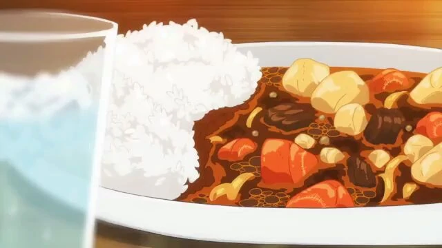

Japanese Curry

Japanese curry is an imported product from the British colonies. Modern curry
is actually super convenient. Bordering on stew, this is a highly customizable dish.
The most important ingredient is the curry roux block which can be purchased at almost
any large grocery store nowadays.
Ingredients
- Japanese curry roux (Regular serving will only need 4 cubes)
- Protein of choice (beef chunks, etc.)
- 1 medium onion
- 1 medium carrot
- 3 medium yellow potatos
- 2 cloves of garlic
Steps
- Dice your onion and cut carrot and potatos into bite-sized chunks
- Mince garlic
- Cut meat into bit-sized chunks
- Heat up pan with oil and add onion, carrot, and potatos. Cook until onions are transparent
- Add meat and try to cook or brown
- Once meat is cooked, add 4 cups of water. Bring it to simmer
- In the meantime, cut up curry roux cubes for easier dissolving
- Once water is simmering, add roux into the water
- The mix will then thicken once roux has been added
- Serve with white rice or anything of your choice